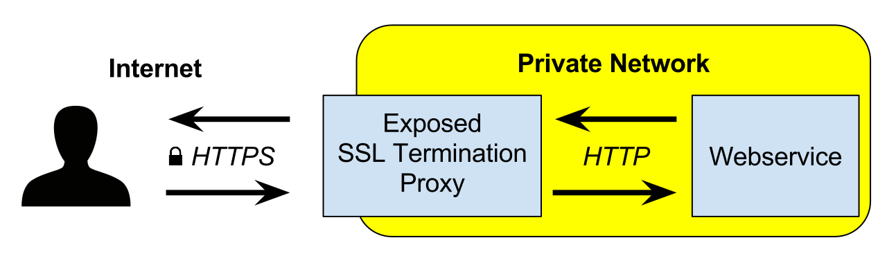

This is the second post in a series about proxy servers and Go. Here is a list of posts in the series:
- Part 1 - HTTP Proxies
- Part 2 - HTTPS Proxies (this part)
- Part 3 - SOCKS Proxies
The previous part is an overview of proxy servers and presents some basic Go implementations, as well as discussing how to configure Go clients to use proxies. While it serves as important background information, it has one glaring omission: these days most web traffic is over HTTPS, not HTTP.
This post will cover proxying HTTPS. It assumes you know what HTTPS and TLS are (if not, check out this earlier post on HTTP servers in Go).
What is different?
Why won't HTTP proxies "just work" for HTTPS? The reason is that an HTTPS client expects to talk to a specific server, and will look for a valid certificate from that server to start sending information.
Say we want to access https://example.org; when our client initiates an HTTPS session to this domain, it expects a valid signed certificate for https://example.org. A proxy server unaffiliated with this domain will find it difficult to provide such a certificate.
Proxies work for HTTPS (HTTP over TLS) by doing one of the following (or a variation):
First, the proxy can "terminate" the TLS connection [1]; the proxy here is the server. It's deployed by the developers of the domain we're accessing, and thus has the right certificates. This is commonly done for reverse proxies. For our https://example.org example - the proxy would have a valid certificate for this domain and would be able to talk to clients. What the proxy does on the other side is up to it - it could be using unencrypted HTTP with backend servers, or use HTTPS with some internal certificates the external world doesn't need to know about.
Here's a Wikipedia diagram of this setup:
Second, the proxy can tunnel the TLS connection to the target server. In this scenario the proxy acts as a blind pipe for traffic.
Third, the proxy can tunnel the TLS connection to the target while also reading (and potentially modifying) its contents. It's still a tunnel, but not a blind one. If you wonder how this is even possible, read on.
TLS-terminating reverse proxy
Let's start with the simplest case - a TLS-terminating reverse proxy. This is very similar to the basic HTTP reverse proxy example from the previous post, but it listens to HTTPS traffic on its incoming port. This server will need a certificate for localhost that the client trusts; I recommend mkcert, or see this post for more details. Here's the code (full code sample on GitHub):
func main() {
fromAddr := flag.String("from", "127.0.0.1:9090", "proxy's listening address")
toAddr := flag.String("to", "127.0.0.1:8080", "the address this proxy will forward to")
certFile := flag.String("certfile", "cert.pem", "certificate PEM file")
keyFile := flag.String("keyfile", "key.pem", "key PEM file")
flag.Parse()
toUrl := parseToUrl(*toAddr)
proxy := httputil.NewSingleHostReverseProxy(toUrl)
srv := &http.Server{
Addr: *fromAddr,
Handler: proxy,
TLSConfig: &tls.Config{
MinVersion: tls.VersionTLS13,
PreferServerCipherSuites: true,
},
}
log.Println("Starting proxy server on", *fromAddr)
if err := srv.ListenAndServeTLS(*certFile, *keyFile); err != nil {
log.Fatal("ListenAndServe:", err)
}
}
To see this proxy in action, we'll need a bit of setup. First, as discussed previously, I have local.alias set up as an alias for 127.0.0.1 [2]; I then used mkcert to generate a locally-trusted certificate with an accompanying private key. Then, the proxy can be run:
$ go run https-reverse-proxy.go \
-certfile <path to certificate .pem> \
-keyfile <path to key .pem>
2022/11/04 19:43:56 Starting proxy server on 127.0.0.1:9090
In a separate window, run the debugging HTTP server listening on its default port 8080:
$ go run http-server-debug-request-headers.go
2022/11/04 19:44:18 Starting server on 127.0.0.1:8080
Finally, we can issue curl requests to our proxy server, and they will be properly forwarded to the debugging server:
$ curl https://local.alias:9090/fo/540
hello /fo/540
As mentioned earlier, this proxy is called "TLS terminating" because it takes care of the encrypted TLS communication with clients. In a realistic scenario, this server would be serving https://mybusiness.com at the default HTTPS port 443, and would have the valid certificate for this domain. This is how most non-trivial websites run these days, and lots of production-grade tools exist to support such a workflow. You can easily configure web servers like Caddy and Nginx to serve as TLS-terminating reverse proxies.
A proxy for tunneling arbitrary traffic to destination
As we've seen, HTTPS doesn't present a big issue for reverse proxies, because these just happen to be the right place to terminate the TLS connection anyhow. How about forward proxies, though? These seem to have a real problem with HTTPS because they don't have the right certificates.
The solution IETF came up with is a special HTTP method called CONNECT. Quoting from RFC 7231:
The CONNECT method requests that the recipient establish a tunnel to the destination origin server identified by the request-target and, if successful, thereafter restrict its behavior to blind forwarding of packets, in both directions, until the tunnel is closed. Tunnels are commonly used to create an end-to-end virtual connection, through one or more proxies, which can then be secured using TLS (Transport Layer Security, [RFC5246]).
CONNECT is intended only for use in requests to a proxy. An origin server that receives a CONNECT request for itself MAY respond with a 2xx (Successful) status code to indicate that a connection is established. However, most origin servers do not implement CONNECT.
To create a tunnel, the following sequence of events occurs:
- The client contacts the proxy and sends it a CONNECT request. The request specifies which destination server (host and port) to connect to, for example CONNECT example.org:443 HTTP/1.1
- The proxy establishes a TCP connection to the specified host:port
- If successful, it returns a HTTP/1.1 200 OK response to the client
- From this point on, the proxy will forward all TCP traffic between the client and destination server on this connection. This traffic is often HTTPS, but it could be anything else
- The proxy monitors both sides of the connection and terminates the tunnel as soon as one of the sides closes its connection.
As you'd expect by now, implementing such a proxy in Go is fairly straightforward! The full code sample is on GitHub; let's start with the standard scaffolding [3]:
func main() {
var addr = flag.String("addr", "127.0.0.1:9999", "proxy address")
flag.Parse()
proxy := &forwardProxy{}
log.Println("Starting proxy server on", *addr)
if err := http.ListenAndServe(*addr, proxy); err != nil {
log.Fatal("ListenAndServe:", err)
}
}
type forwardProxy struct {
}
To have forwardProxy implement the http.Handler interface, let's add a ServeHTTP method:
func (p *forwardProxy) ServeHTTP(w http.ResponseWriter, req *http.Request) {
if req.Method == http.MethodConnect {
proxyConnect(w, req)
} else {
http.Error(w, "this proxy only supports CONNECT", http.StatusMethodNotAllowed)
}
}
This proxy will only agree to serve CONNECT tunnels and won't work as a regular HTTP proxy. Implementing the latter is left as an exercise to the reader. The key function is proxyConnect:
func proxyConnect(w http.ResponseWriter, req *http.Request) {
log.Printf("CONNECT requested to %v (from %v)", req.Host, req.RemoteAddr)
targetConn, err := net.Dial("tcp", req.Host)
if err != nil {
log.Println("failed to dial to target", req.Host)
http.Error(w, err.Error(), http.StatusServiceUnavailable)
return
}
w.WriteHeader(http.StatusOK)
hj, ok := w.(http.Hijacker)
if !ok {
log.Fatal("http server doesn't support hijacking connection")
}
clientConn, _, err := hj.Hijack()
if err != nil {
log.Fatal("http hijacking failed")
}
log.Println("tunnel established")
go tunnelConn(targetConn, clientConn)
go tunnelConn(clientConn, targetConn)
}
This code reads the destination address from the request and establishes a new TCP connection. It then... hijacks the client connection? What's that all about? Don't worry, it's simpler than it sounds! When working with the net/http package, we don't deal with TCP connections directly; instead, we deal with abstractions like ResponseWriter. But underlying every HTTP session is a TCP connection; the Hijack method lets us get to that connection, essentially puncturing a hole through the abstraction.
The caveat is that once we've hijacked the connection, we're on our own. The net/http package will no longer manage things for us; we have to close the connection on our own when we're done, and so on.
In this case of tunneling traffic in the proxy, the raw TCP connection is exactly what we need. So we end up with two TCP connections - one with the client and one with the destination server. The next step is to hook them up together. We start two goroutines - one for each direction; tunnelConn does this:
func tunnelConn(dst io.WriteCloser, src io.ReadCloser) {
io.Copy(dst, src)
dst.Close()
src.Close()
}
For a production server you'd probably want to be a bit more careful w.r.t error handling, but this will do for demonstration purposes.
Let's take this proxy for a spin; first, run it in a terminal:
$ go run connect-tunnel-proxy.go
2022/11/04 21:10:49 Starting proxy server on 127.0.0.1:9999
Now we can access an HTTPS site using this proxy; we'll invoke curl -v to see exactly what it's doing. Note that we set up the https_proxy env var to tell curl which proxy it needs to contact in order to access HTTPS targets:
$ https_proxy=localhost:9999 curl -v https://example.org
* Uses proxy env variable https_proxy == 'localhost:9999'
* Trying 127.0.0.1:9999...
* Connected to (nil) (127.0.0.1) port 9999 (#0)
* allocate connect buffer!
* Establish HTTP proxy tunnel to example.org:443
> CONNECT example.org:443 HTTP/1.1
> Host: example.org:443
> User-Agent: curl/7.81.0
> Proxy-Connection: Keep-Alive
>
< HTTP/1.1 200 OK
< Transfer-Encoding: chunked
* Ignoring Transfer-Encoding in CONNECT 200 response
<
* Proxy replied 200 to CONNECT request
* CONNECT phase completed!
* ALPN, offering h2
* ALPN, offering http/1.1
* CAfile: /etc/ssl/certs/ca-certificates.crt
* CApath: /etc/ssl/certs
* TLSv1.0 (OUT), TLS header, Certificate Status (22):
* TLSv1.3 (OUT), TLS handshake, Client hello (1):
* TLSv1.2 (IN), TLS header, Certificate Status (22):
...
... // more TLS spew
...
<!doctype html>
... // And the HTML for https://example.org is dumped
We see that curl contacted our proxy, sending it a CONNECT request for https://example.org. Our proxy replied with 200 OK and then curl proceeded to perform a TLS handshake with the destination server, through the proxy. It works! Our proxy also prints some useful log lines:
2022/11/04 21:12:15 CONNECT requested to example.org:443 (from 127.0.0.1:33468)
2022/11/04 21:12:15 tunnel established
In Part 1, we've written a simple HTTP client in Go to test our proxy interactions. Let's reuse it here, this time providing a https_proxy setting:
$ https_proxy=localhost:9999 go run http-get-basic.go --target https://example.org
Response status: 200 OK
<!doctype html>
... // And the HTML for https://example.org is dumped
MITM / intercepting HTTPS proxies
So far in our discussion of HTTPS proxies we've assumed that proxies cannot actually snoop into the underlying HTTPS traffic unless they have the right certificate. This is true, of course. I'm not aware of any breach in the security of a modern version of TLS (1.3 at the time of writing). However, in cryptography what matters is the weakest link - and the disclaimer "unless they have the right certificate" hints at one.
Man-in-the-middle (MITM) forward proxies allow intercepting HTTPS traffic, reading and even modifying it. They accomplish this by enjoying the collaboration of the system administrator of the machine the client is running on.
TLS certificates follow a "chain of trust". With access to the client machine, we can install a special root certificate authority (CA) that the machine inherently trusts, and use it to sign fake certificates the proxy can generate for any website.
Here's how it works:
- The client machine trusts certificate authority X (this was set up by the administrator or by the user themselves). Typically browsers come with hard-coded lists of "root CAs", but it's possible to augment these lists with system-specific settings
- A tunneling proxy has the private keys of X, and can use them to sign certificates
- Once the proxy receives a CONNECT request to access some domain.com, it generates a fake certificate for this domain, signing it with X's key
- This permits the proxy to communicate with the client on behalf of domain.com, essentially decrypting all traffic intended only for that domain's eyes
- The proxy can look at the traffic and modify it, and then forward it to the actual domain.com (using a separate TLS connection), and similarly examine and modify the responses
This sounds sinister, but that isn't the only use case. Debugging proxies exist that let us do this for valid reasons. Moreover, if an organization installs a proxy it probably doesn't want users to easily circumvent it by blind tunneling, so it may set all machines up such that the proxy has access to the traffic's contents. If you think your bank logins are safe from your work laptop because the bank's website uses TLS, think again. It's unlikely that your workplace will use your bank credentials for any sinister purposes, but they probably could if they wanted to.
Note that in some setups, the organization doesn't even have to set up a proxy to do this. If all the traffic from a computer goes through a specific set of routers, for example, these routers can implement the same trick to decrypt and proxy all HTTPS traffic - without the user suspecting anything. The critical part here is having the private keys for a certificate authority the user's machine trusts.
Implementing such a proxy in Go is not hard, but there are some nuances to be aware of. I have a working implementation on GitHub. Here's the well-commented main HTTP handler of the proxy (for the functions it calls, consult the full source):
// proxyConnect implements the MITM proxy for CONNECT tunnels.
func (p *mitmProxy) proxyConnect(w http.ResponseWriter, proxyReq *http.Request) {
log.Printf("CONNECT requested to %v (from %v)", proxyReq.Host, proxyReq.RemoteAddr)
// "Hijack" the client connection to get a TCP (or TLS) socket we can read
// and write arbitrary data to/from.
hj, ok := w.(http.Hijacker)
if !ok {
log.Fatal("http server doesn't support hijacking connection")
}
clientConn, _, err := hj.Hijack()
if err != nil {
log.Fatal("http hijacking failed")
}
// proxyReq.Host will hold the CONNECT target host, which will typically have
// a port - e.g. example.org:443
// To generate a fake certificate for example.org, we have to first split off
// the host from the port.
host, _, err := net.SplitHostPort(proxyReq.Host)
if err != nil {
log.Fatal("error splitting host/port:", err)
}
// Create a fake TLS certificate for the target host, signed by our CA. The
// certificate will be valid for 10 days - this number can be changed.
pemCert, pemKey := createCert([]string{host}, p.caCert, p.caKey, 240)
tlsCert, err := tls.X509KeyPair(pemCert, pemKey)
if err != nil {
log.Fatal(err)
}
// Send an HTTP OK response back to the client; this initiates the CONNECT
// tunnel. From this point on the client will assume it's connected directly
// to the target.
if _, err := clientConn.Write([]byte("HTTP/1.1 200 OK\r\n\r\n")); err != nil {
log.Fatal("error writing status to client:", err)
}
// Configure a new TLS server, pointing it at the client connection, using
// our certificate. This server will now pretend being the target.
tlsConfig := &tls.Config{
PreferServerCipherSuites: true,
CurvePreferences: []tls.CurveID{tls.X25519, tls.CurveP256},
MinVersion: tls.VersionTLS13,
Certificates: []tls.Certificate{tlsCert},
}
tlsConn := tls.Server(clientConn, tlsConfig)
defer tlsConn.Close()
// Create a buffered reader for the client connection; this is required to
// use http package functions with this connection.
connReader := bufio.NewReader(tlsConn)
// Run the proxy in a loop until the client closes the connection.
for {
// Read an HTTP request from the client; the request is sent over TLS that
// connReader is configured to serve. The read will run a TLS handshake in
// the first invocation (we could also call tlsConn.Handshake explicitly
// before the loop, but this isn't necessary).
// Note that while the client believes it's talking across an encrypted
// channel with the target, the proxy gets these requests in "plain text"
// because of the MITM setup.
r, err := http.ReadRequest(connReader)
if err == io.EOF {
break
} else if err != nil {
log.Fatal(err)
}
// We can dump the request; log it, modify it...
if b, err := httputil.DumpRequest(r, false); err == nil {
log.Printf("incoming request:\n%s\n", string(b))
}
// Take the original request and changes its destination to be forwarded
// to the target server.
changeRequestToTarget(r, proxyReq.Host)
// Send the request to the target server and log the response.
resp, err := http.DefaultClient.Do(r)
if err != nil {
log.Fatal("error sending request to target:", err)
}
if b, err := httputil.DumpResponse(resp, false); err == nil {
log.Printf("target response:\n%s\n", string(b))
}
defer resp.Body.Close()
// Send the target server's response back to the client.
if err := resp.Write(tlsConn); err != nil {
log.Println("error writing response back:", err)
}
}
}
This proxy only handles the simple case where the target's domain is explicitly provided in the CONNECT request. It doesn't support x509 SAN extensions or SNI, though these should be easy to add. For some additional details on the various complications see this documentation page from mitmproxy, a featureful intercepting HTTPS proxy implementation in Python.
To run this proxy, we need to provide it with the path to the certificate and private key of a CA implicitly trusted by our machine. Since I'm using mkcert and have previously ran it with -install to install such a CA, I found the path to these by running mkcert -CAROOT. The invocation then looks something like this (your paths will be different):
$ mkcert -CAROOT
/home/eliben/.local/share/mkcert
$ go run connect-mitm-proxy.go \
-cacertfile /home/eliben/.local/share/mkcert/rootCA.pem \
-cakeyfile /home/eliben/.local/share/mkcert/rootCA-key.pem
2022/11/08 20:49:02 loaded CA certificate and key; IsCA=true
2022/11/08 20:49:02 Starting proxy server on 127.0.0.1:9999
| [1] | The first time you hear it, the term "terminate" may sound a bit odd. In this context it doesn't carry any negative connotations; it simply means "the TLS ends here", to distinguish from "TLS pass-through", where the TLS traffic is tunneled as-is to the backend server. |
| [2] | You can get by with just localhost too, though. |
| [3] | Note that while this proxy helps us access HTTPS destinations, it serves over plain HTTP itself. Having this proxy serve HTTPS is straightforward, and can be accomplished as an exercise (hint: see the earlier code sample in this post). |